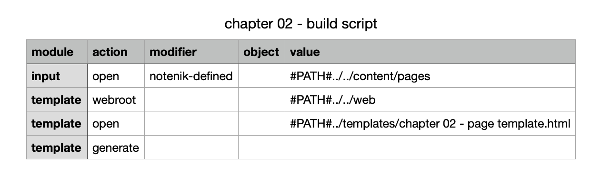

2. Add content to your website ↑
2.7. Review the script file
We also have an updated script file for chapter 02, but you will see that there are only two differences from the one we used in chapter 01.

The first change is simply to pull in the chapter 02 template, rather than the one from chapter 01.
The second change is a little more interesting. We’ve added a template webroot script command to tell Notenik where we expect to find the top level of the website we are building. In this case, we’re pointing to the web folder. This will help Notenik figure out the correct destination for the image files to be copied.
Next: 2.8. Run the Notenik build script